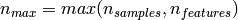
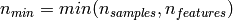
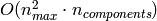
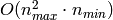
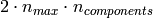

4.3. Decomposing signals in components (matrix factorization problems)¶
4.3.1. Principal component analysis (PCA)¶
4.3.1.1. Exact PCA and probabilistic interpretation¶
PCA is used to decompose a multivariate dataset in a set of successive orthogonal components that explain a maximum amount of the variance. In the scikit-learn, PCA is implemented as a transformer object that learns n components in its fit method, and can be used on new data to project it on these components.
The optional parameter whiten=True parameter make it possible to project the data onto the singular space while scaling each component to unit variance. This is often useful if the models down-stream make strong assumptions on the isotropy of the signal: this is for example the case for Support Vector Machines with the RBF kernel and the K-Means clustering algorithm. However in that case the inverse transform is no longer exact since some information is lost while forward transforming.
In addition, the ProbabilisticPCA object provides a probabilistic interpretation of the PCA that can give a likelihood of data based on the amount of variance it explains. As such it implements a score method that can be used in cross-validation.
Below is an example of the iris dataset, which is comprised of 4 features, projected on the 2 dimensions that explain most variance:
Examples:
4.3.1.2. Approximate PCA¶
Often we are interested in projecting the data onto a lower dimensional space that preseves most of the variance by droping the singular vector of components associated with lower singular values.
For instance for face recognition, if we work with 64x64 gray level pixel pictures the dimensionality of the data is 4096 and it is slow to train a RBF Support Vector Machine on such wide data. Furthermore we know that intrinsic dimensionality of the data is much lower than 4096 since all faces pictures look alike. The samples lie on a manifold of much lower dimension (say around 200 for instance). The PCA algorithm can be used to linearly transform the data while both reducing the dimensionality and preserve most of the explained variance at the same time.
The class RandomizedPCA is very useful in that case: since we are going to drop most of the singular vectors it is much more efficient to limit the computation to an approximated estimate of the singular vectors we will keep to actually perform the transform.
RandomizedPCA can hence be used as a drop in replacement for PCA minor the exception that we need to give it the size of the lower dimensional space n_components as mandatory input parameter.
If we note  and , the time complexity of RandomizedPCA is  instead of  for the exact method implemented in PCA.
The memory footprint of RandomizedPCA is also proportional to
 instead of  for the exact method.
for the exact method.
Furthermore RandomizedPCA is able to work with scipy.sparse matrices as input which make it suitable for reducing the dimensionality of features extracted from text documents for instance.
Note: the implementation of inverse_transform in RandomizedPCA is not the exact inverse transform of transform even when whiten=False (default).
References:
4.3.2. Independent component analysis (ICA)¶
ICA finds components that are maximally independent. It is classically used to separate mixed signals (a problem know as blind source separation), as in the example below: